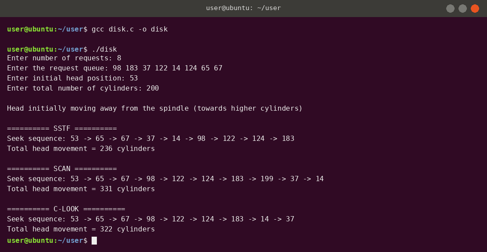

Practical 8
Disk Scheduling Algorithms – SSTF, SCAN and C-LOOK
Theory
Disk scheduling decides the order in which pending disk I/O requests are served. The aim is to reduce the total head movement, because moving the read/write head is the slowest part of a disk access.
Key terms
- Cylinder (track) – a circular ring of data on the disk. Requests are given as cylinder numbers.
- Seek time – the time to move the head to the required cylinder; it is proportional to the distance moved.
- Total head movement – the sum of |next − current| over all moves; the algorithm with the smaller value is more efficient.
- Direction – in this program the head initially moves away from the spindle, i.e. towards higher cylinder numbers.
Algorithms implemented
- SSTF (Shortest Seek Time First) – always serves the pending request closest to the current head position. It gives low movement but may cause starvation of far-away requests.
- SCAN (elevator algorithm) – the head moves in one direction serving requests, goes all the way to the last cylinder (
size - 1), then reverses and serves the remaining requests. - C-LOOK (Circular LOOK) – the head moves only up to the largest request (not the end of the disk), then jumps straight to the smallest request and continues upward. Requests are served in one direction only, which gives a more uniform waiting time.
Worked example from the output
Request queue 98 183 37 122 14 124 65 67, head at 53, 200 cylinders: SSTF = 236, SCAN = 331 and C-LOOK = 322 cylinders of head movement.
Code
/* Practical 8 : Disk Scheduling - SSTF, SCAN, C-LOOK
Initial head movement: AWAY from the spindle (towards higher cylinder numbers) */
#include <stdio.h>
#include <stdlib.h>
#define MAX 50
int n, head, size, req[MAX];
void sorted_copy(int a[]) {
for (int i = 0; i < n; i++) a[i] = req[i];
for (int i = 0; i < n - 1; i++)
for (int j = 0; j < n - i - 1; j++)
if (a[j] > a[j + 1]) { int t = a[j]; a[j] = a[j + 1]; a[j + 1] = t; }
}
void move_to(int *cur, int *total, int to) {
*total += abs(to - *cur);
*cur = to;
printf(" -> %d", to);
}
void sstf(void) {
int visited[MAX] = {0}, cur = head, total = 0;
printf("\n========== SSTF ==========\nSeek sequence: %d", cur);
for (int c = 0; c < n; c++) {
int best = -1, bd = 1 << 30;
for (int i = 0; i < n; i++)
if (!visited[i] && abs(req[i] - cur) < bd) { bd = abs(req[i] - cur); best = i; }
visited[best] = 1;
move_to(&cur, &total, req[best]);
}
printf("\nTotal head movement = %d cylinders\n", total);
}
void scan(void) {
int a[MAX], cur = head, total = 0, i = 0;
sorted_copy(a);
while (i < n && a[i] < head) i++;
printf("\n========== SCAN ==========\nSeek sequence: %d", cur);
for (int j = i; j < n; j++) move_to(&cur, &total, a[j]); /* move away from spindle */
if (i > 0) {
if (cur != size - 1) move_to(&cur, &total, size - 1); /* go to the last cylinder */
for (int j = i - 1; j >= 0; j--) move_to(&cur, &total, a[j]); /* reverse direction */
}
printf("\nTotal head movement = %d cylinders\n", total);
}
void clook(void) {
int a[MAX], cur = head, total = 0, i = 0;
sorted_copy(a);
while (i < n && a[i] < head) i++;
printf("\n========== C-LOOK ==========\nSeek sequence: %d", cur);
for (int j = i; j < n; j++) move_to(&cur, &total, a[j]); /* up to the largest request */
if (i > 0) {
move_to(&cur, &total, a[0]); /* jump to the smallest request */
for (int j = 1; j < i; j++) move_to(&cur, &total, a[j]);
}
printf("\nTotal head movement = %d cylinders\n", total);
}
int main(void) {
printf("Enter number of requests: ");
scanf("%d", &n);
printf("Enter the request queue: ");
for (int i = 0; i < n; i++) scanf("%d", &req[i]);
printf("Enter initial head position: ");
scanf("%d", &head);
printf("Enter total number of cylinders: ");
scanf("%d", &size);
printf("\nHead initially moving away from the spindle (towards higher cylinders)\n");
sstf();
scan();
clook();
return 0;
}
Output

Tap or click the screenshot to open it full size.